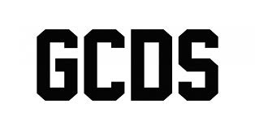

Geschiedenis
Mijn lettertype komt oorspronkelijk van een Italiaans High-End kledingmerk. Dit kledingmerk heet GCDS, ook wel bekend als Guiliano Calza Design Studios. GCDS werd opgericht in 2015 door twee broers, Giuliano en Giordano Calza. Guiliano heeft een diploma Politieke wetenschappen en een diploma Marketing aan de Universiteit van Napels. Toen ging hij verder studeren in Shanghai. Na vier jaar keerde hij terug naar Italië en ging hij werken als "image consultant" in verschillende sectoren. Hij ging daarvoor de Chinese markt bestuderen, hij leerde Mandarijn en zag de toekomst in maxi-prints. In China begon hij met een logo en creëerde de eerste GCDS hoodies en sokken. Deze eerste paar kledingstukken die hij uitbracht waren simpel, met alleen het logo van GCDS erop. Er waren maar honderd exemplaren gemaakt destijds en die waren gemaakt in China. Echter tegenwoordig wordt alles gemaakt in Italië. Ze begonnen alleen kleding online te verkopen, maar door succes wisten ze dit later verder uit te breiden door fysieke winkels te openen. Ze zijn nu zelfs zo groot geworden dat ze hun collecties mogen vertonen op de Milaan Fashion Week en de New York Fashion Week. Ook heeft GCDS mogen samenwerken met grote series, zoals Bratz en One Piece.
Het font wat Guiliano heeft gebruikt is een vorm van een Varsity font, echter kon ik nergens vinden of dit precies het juiste font is. Daarom heb ik een font gekozen die er op leek namelijk "Rigid Square" van Ryoichi Tsunekawa. Dit is een College Varsity font volgens hem. De geschiedenis van varsity letters bestaat sinds het einde van de 19e eeuw in de Verenigde Staten. Er wordt vaak gezegd dat de oorsprong hiervan is ontstaan aan het Harvard University's Harvard Crimson football team in 1865. Alle teamleden kregen een wollen trui met een grote letter 'H' erop geborduurd om hun prestaties te belonen. In de loop van de tijd begonnen niet alleen atleten, maar ook studenten die uitblinken in academische prestaties en buitenschoolse activiteiten, varsity letters te verdienen. De letters zijn juist heel duidelijk prominente en dikke letters, omdat het een symbool voor trots moest zijn. Ze wilden namelijk dat de studenten met zo'n letter makkelijk herkend kunnen worden en dat het dus het opvalt voor de medestudenten om te laten zien dat zij een varsity letter hebben. Niet alleen geeft dit erkenning en bewijs voor hun prestaties, maar ook zorgt dit ervoor dat de studenten met een varsity letter een diepere connectie hebben met de school. Dit spreidde zich later uit naar andere scholen. Elke school wilde niet exact dezelfde letter hebben dus besloten ze om elke varsity letter dus ook anders te maken per school, die uniek is aan hun school. Toch bleven de letters tot bepaalde zin in dezelfde stijl. Uiteindelijk werd het dragen van een trui of jas met een varsity letter een soort traditie voor universiteiten in de Verenigde Staten.